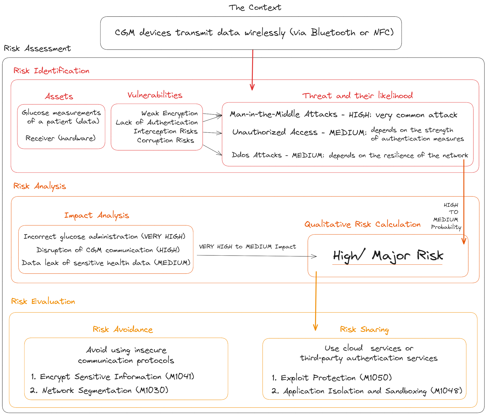

Projects
Project 1: Digital Investigation of Fraudulent Transactions
Design a framework incorporating behavioral profiling techniques and AI/ML technologies to detect and investigate fraudulent transactions.

Project 2: Risk Assessment of CGM Systems
Writed a complete risk assessment in three steps in order to defend agasint Network Based-attack on CGM devices
Project 3: OpenAI 2023 Attack Anatomy Chain
Examinine the timeline and anatomy of the DarkWeb account Leak of 2023 in order to uncover the sequential patterns and methodologies employed by cybercriminals.

Project 4: Incident Response Plan for Brute Force Attacks
Developed an incident response plan following the NIST standard to effectively mitigate and respond to brute force attacks.
Project 5: Participation in ICTF 2024
Focused on crypto, OSINT, and forensics challenges during the ICTF 2024 competition, enhancing my skills in these critical areas of cybersecurity.